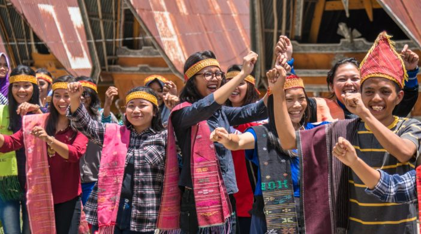
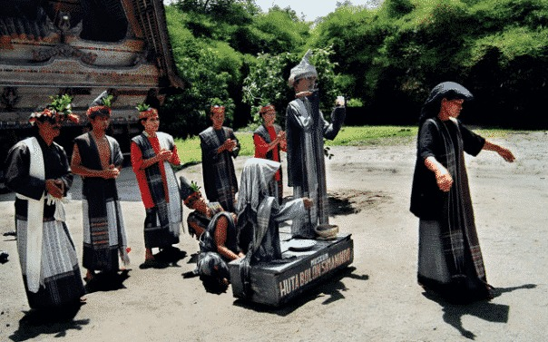
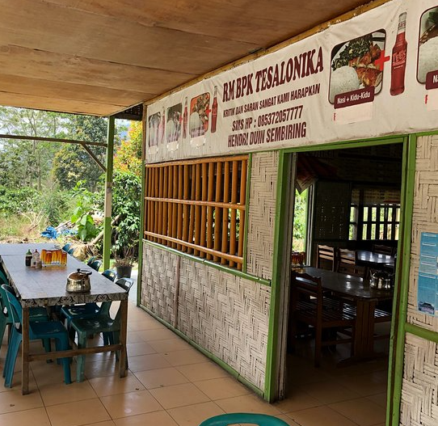
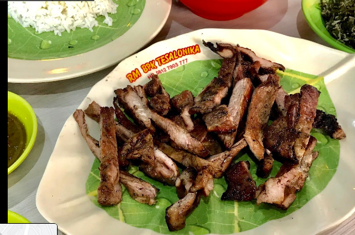
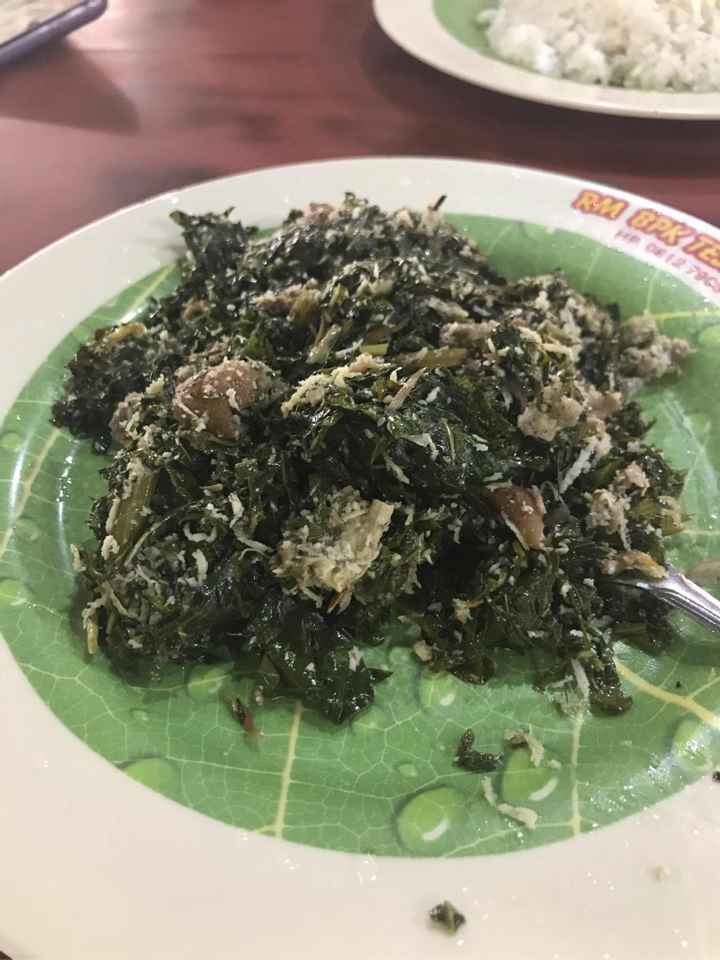
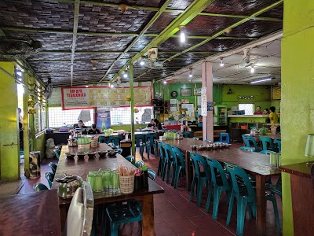
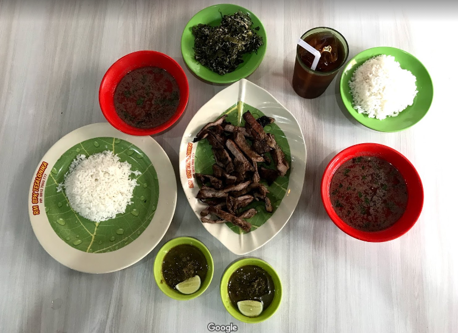

HORAS
Sejarah
Partuturan
Budaya
Rumah Adat
Pakaian Adat
Senjata Tradisional
Alat Musik
Makanan Khas
Rumah Makan BPK Tesalonika
Jl. Jamin Ginting No.103, Simpang Selayang, Kec. Medan Tuntungan, Kota Medan, Sumatera Utara 20135
Buka Jam: 9AM–10PM

Menyediakan Makanan Khas Batak
Galeri



